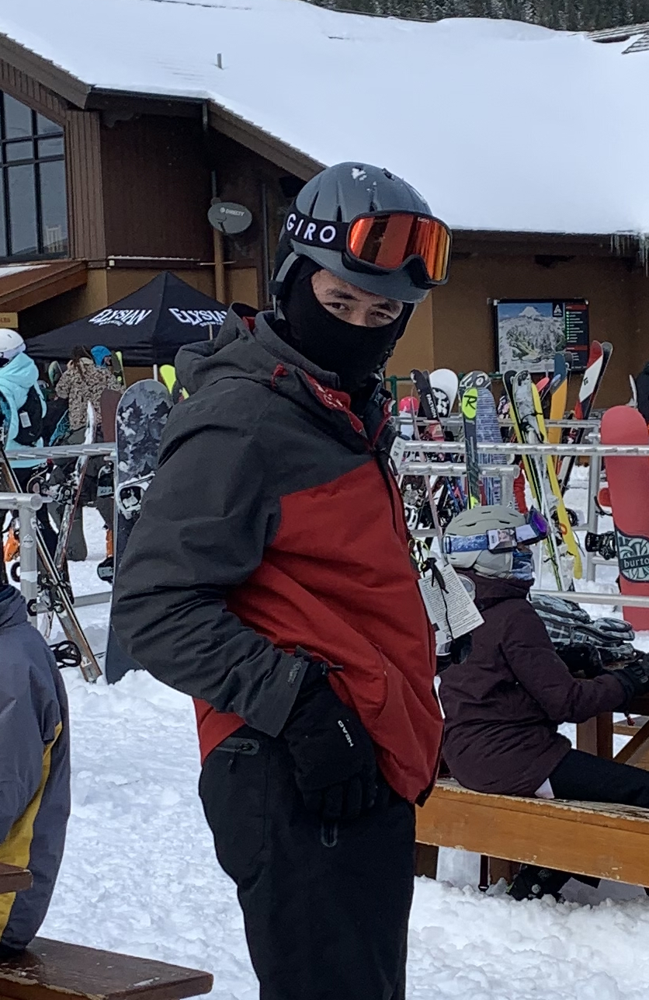
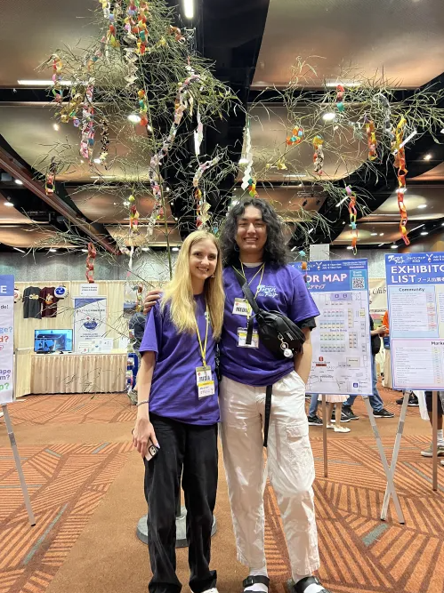
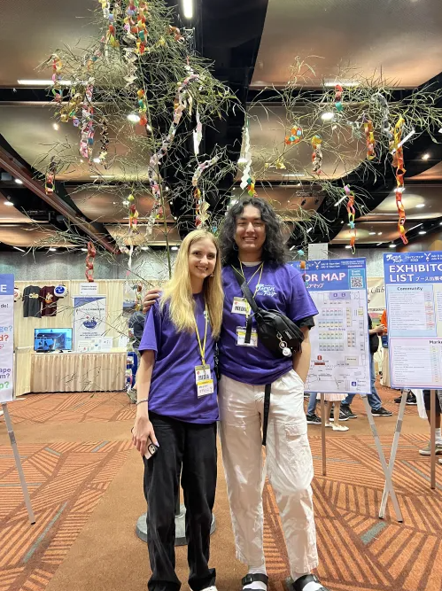
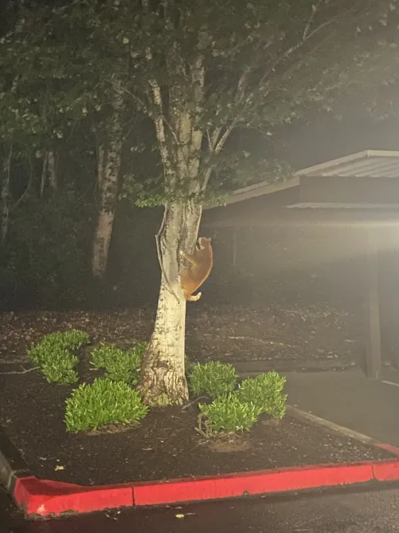
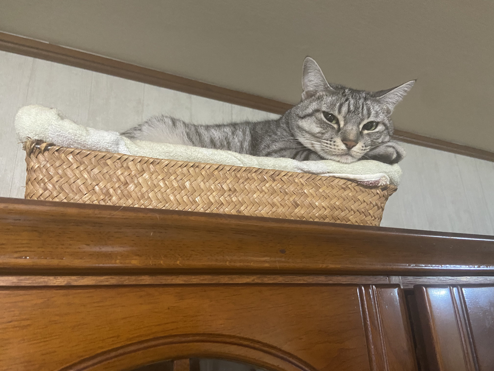
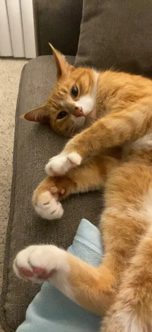
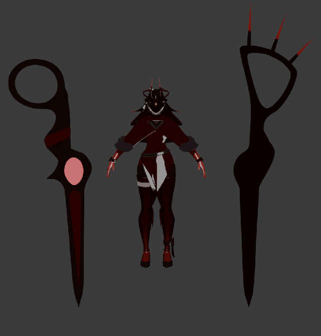

HOBBIES
Skiing
I have been skiing for about 13 years now. Although I am no professional, I do enjoy going to new and challenging mountains in and out of the US.

Japanese Culture
As someone born half Japanese and half White, I have always been deeply rooted in Japanese culture.
I regularly look for opportunities to go to Japan and I try my best to participate in many culture events!


 


Cat Photography
I have not fully invested myself into photography, but I do enjoy taking pictures of cats!





Modding
I have always enjoyed playing video games since I was very young.
I was always so excited to share my DS with others or play on the WII with them.
As I grew older, I found that making games is another motivation for me to keep coding.
Recently, I have begun modding a game called Risk of Rain 2 and I enjoy creating playable characters.
